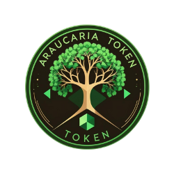

ARaucaria Token — ARAUC
Community utility token on the Solana blockchain. Built for sustainable growth, community initiatives and on-chain experimentation.
Mint Address
APzZG3Pk5v81xRJLQMJ8b1oNnzeoMC27UFFaVjPVjcBS